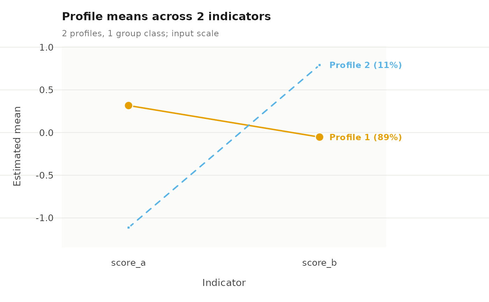
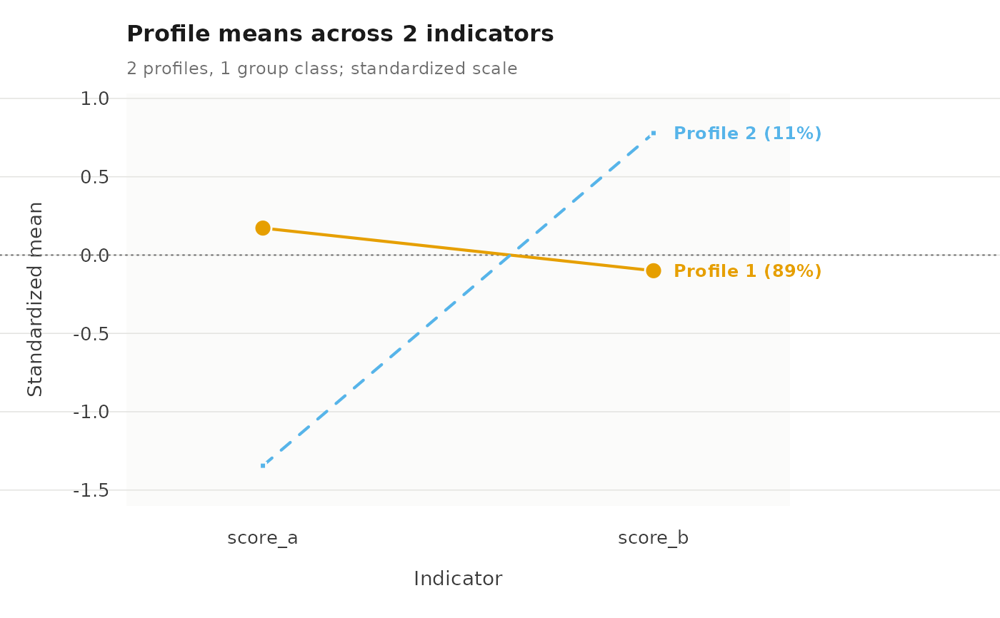
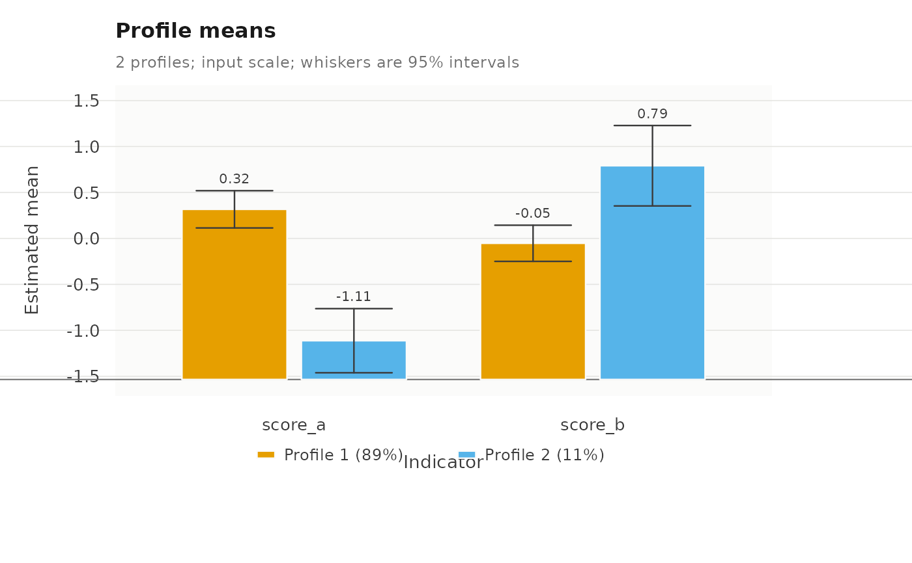
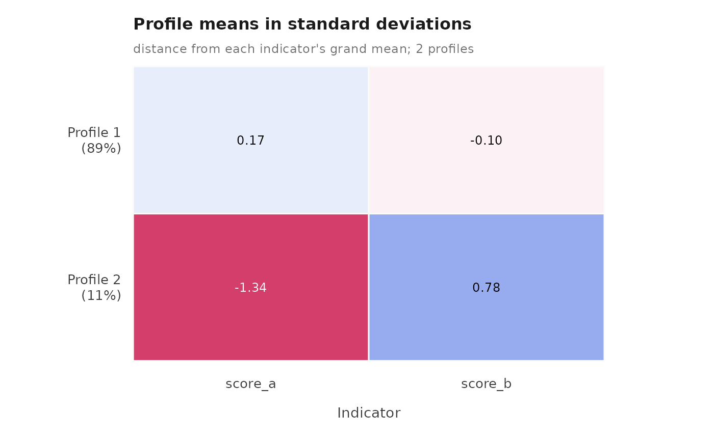
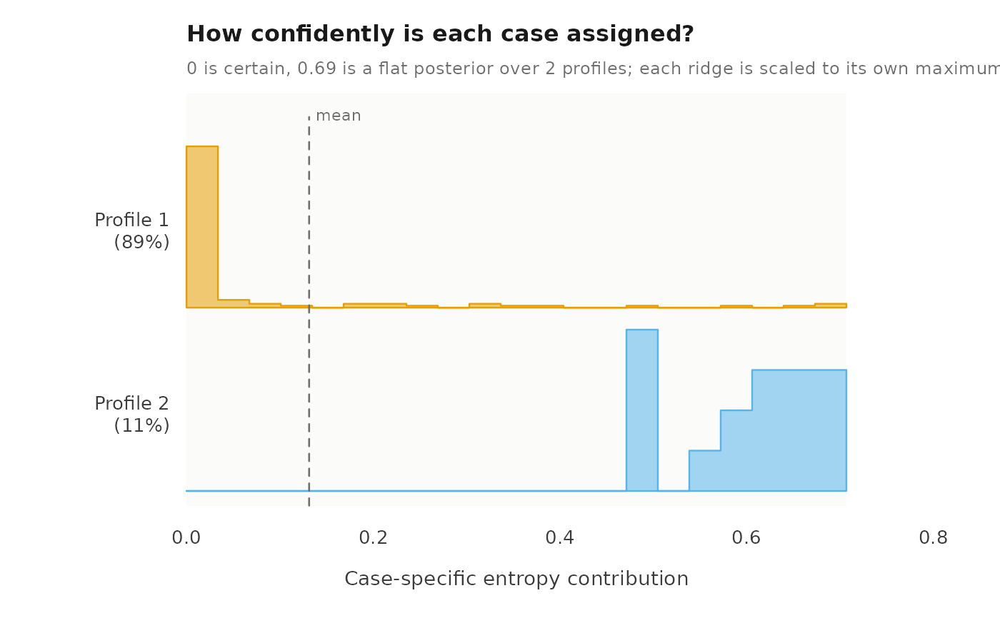
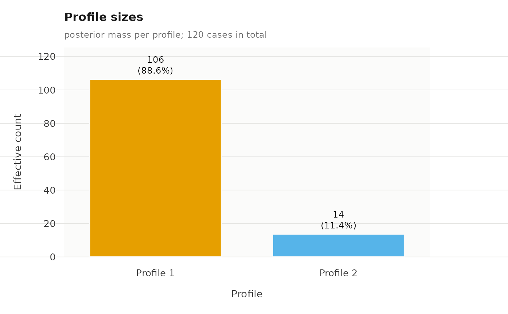
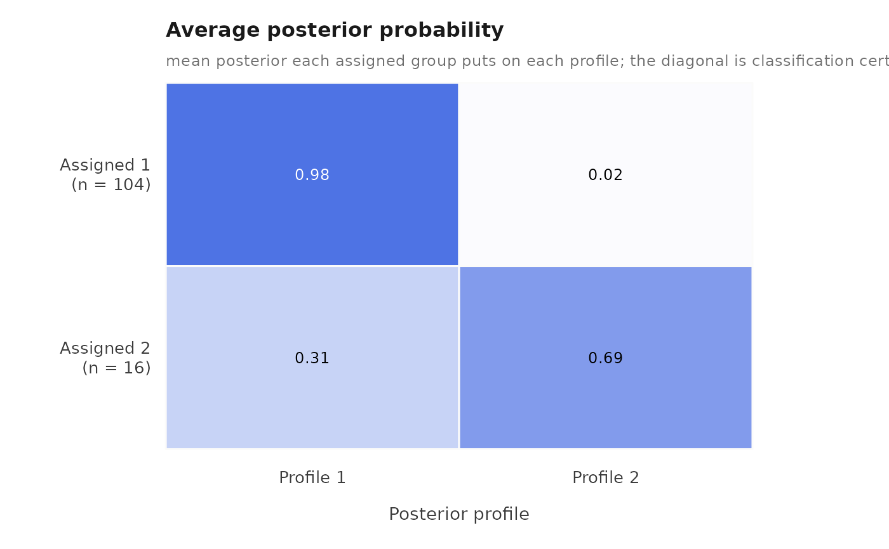

Draws the profile means across indicators, or the profile prevalence within each latent group class. Series are distinguished by colour, point symbol and line type together, and labelled directly, so a line plot stays readable in greyscale and needs no legend; the sequence grid carries the profile number in each cell for the same reason.
Usage
# S3 method for class 'multilpa'
plot(
x,
what = c("profiles", "bars", "heatmap", "responses", "probabilities", "sequences",
"sizes", "entropy", "posteriors", "avepp", "all"),
data = NULL,
scale = c("raw", "standardized"),
category = "last",
labels = TRUE,
main = NULL,
subtitle = NULL,
palette = NULL,
symbols = NULL,
linetypes = NULL,
style = .multilpa_style(),
cell_labels = TRUE,
...
)Arguments
- x
A fitted
multilpamodel.- what
Which view to draw.
plot_views()lists every value with its group and a one-line description; the"enumeration"row it also lists belongs toplot.multilpa_enumeration(), not to this method.The measurement model, three ways:
"profiles"draws one line per profile across the continuous indicators, with each profile's marker area proportional to its prevalence."bars"draws the same means as grouped bars, one bar per profile within each indicator, with a 95% interval on every bar whendatais supplied."heatmap"draws them as a diverging grid of standard deviations from each indicator's grand mean, which is the quickest read when there are many indicators or many profiles."responses"is the categorical counterpart of"profiles", one line per profile across the categorical indicators, showing the probability of a chosen category.The two-level structure:
"probabilities"plots profile prevalence within each group class, one line per group class – the quantity the second level exists to estimate."sequences"draws one row per group, one column per position, coloured and numbered by the assigned profile, with the groups grouped by their latent class; it needs a fit made withtime =.How big each profile is:
"sizes"draws one bar per profile holding its effective count – the posterior mass it carries, not the number of cases that won a tie – with the count and the share printed on the bar.Classification quality:
"entropy"draws each case's entropy contribution as one ridge per profile, and"posteriors"draws the posterior probability of each case's assigned profile the same way. Both ridges are scaled to their own maximum, following the usual ridgeline convention, so ridge height compares shapes and not profile sizes; prevalence is printed in each profile's label instead. Both read the individual posteriors alone, so every family of this package can draw them; a one-profile fit refuses them with an error of classlatents_nothing_to_plot, because every case then belongs to the single profile with probability one."avepp"draws the average posterior probability matrix: one row per assigned profile, one column per profile, each cell the mean posterior that group puts on that profile. The diagonal is the avePP usually reported, and the off-diagonal says which profiles a group is confused with, which the diagonal alone cannot show.- data
Optional. The data frame the model was fitted to, used by
what = "bars"to put a 95% interval on every bar and ignored by every other view. A fit carries the columns it was built from, so the intervals are drawn without this being supplied; pass it only to draw them from a different frame. A model family whose standard errors are not implemented gets bars without whiskers rather than an error.- scale
For
what = "profiles","raw"plots the estimated means in input units, and"standardized"divides each indicator's deviation from its grand mean by that indicator's observed standard deviation. Use"standardized"when indicators are on different scales, where raw means make the largest-scale indicator dominate the shape.- category
For
what = "responses", which category's probability to plot."last"uses each indicator's highest category, which is the usual choice for binary indicators,"first"uses the lowest, or give a single category label or index used for every indicator.- labels
TRUEprints a direct label at the right end of each series.- main, subtitle
Panel title and secondary line.
NULLfor none; pass""to reserve the space without text.- palette, symbols, linetypes
Vectors of colours, plotting characters and line types, recycled to the number of series. Defaults are the Okabe-Ito palette and matched symbol and line-type sequences.
- style
A list of visual constants, as built by
.multilpa_style(); pass named elements to override individual constants.- cell_labels
For
what = "sequences",TRUEprints the profile number inside each cell, so the profile is never carried by colour alone. The numbers are drawn only where the cell is wide and tall enough to hold one.- ...
Further named visual constants, merged into
style.
Details
The plot shows point estimates only. It carries no standard errors,
and profile order is arbitrary, so two fits must have their labels aligned
before their plots are compared. With scale = "standardized" the
standard deviations are the observed indicator standard deviations, not
the within-profile residual standard deviations, so the plotted values are
comparable across indicators but are not effect sizes.
See also
plot_views() for the catalogue of views.
Examples
set.seed(7)
example_data <- data.frame(
school = rep(seq_len(12), each = 10),
score_a = rnorm(120), score_b = rnorm(120)
)
fit <- multilpa(example_data, c("score_a", "score_b"), "school",
n_profiles = 2, n_group_classes = 1, n_starts = 2, seed = 1)
plot(fit)

plot(fit, scale = "standardized")

plot(fit, what = "bars")

plot(fit, what = "heatmap")

plot(fit, what = "entropy")

plot(fit, what = "sizes")

plot(fit, what = "avepp")

plot_views()
#> type group
#> 1 profiles measurement
#> 2 bars measurement
#> 3 heatmap measurement
#> 4 responses measurement
#> 5 probabilities structure
#> 6 sequences structure
#> 7 transitions structure
#> 8 sizes structure
#> 9 entropy diagnostics
#> 10 posteriors diagnostics
#> 11 avepp diagnostics
#> 12 enumeration selection
#> 13 all every
#> description
#> 1 Profile means across indicators, point size showing profile prevalence
#> 2 Profile means as grouped bars, with 95% intervals when `data` is given
#> 3 Profile means as standard deviations from each indicator's grand mean
#> 4 Categorical response probabilities, one line per profile
#> 5 Profile prevalence within each group class, the two-level quantity
#> 6 Each group's profile at each occasion, one row per group
#> 7 Estimated transition matrix, one panel per group class (a transition fit)
#> 8 Effective number of cases in each profile, with its share
#> 9 Per-case entropy contribution within each profile, as ridges
#> 10 Posterior probability of the assigned profile, as ridges
#> 11 Average posterior probability: assigned profile by posterior profile
#> 12 Information criteria across a candidate grid (plot an enumeration)
#> 13 Every view above that this fit has the ingredients for, in one call